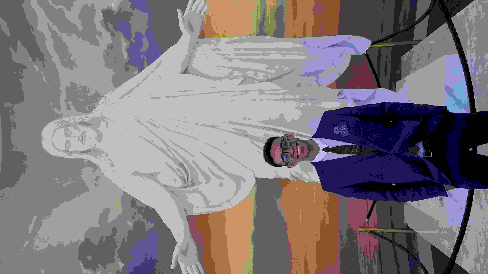

Samuel Ferreira Araújo | WDD 130

Hello! My name is Samuel Ferreira Araujo, and I am from Bahia, Brazil. I am currently studying Software Development through BYU-Pathway and BYU-Idaho. I enjoy learning English, going to the gym, and improving my skills in technology and communication. I also work with car sales, which has helped me develop strong communication and customer service skills. I am excited to learn more about web development and build useful projects during this course.